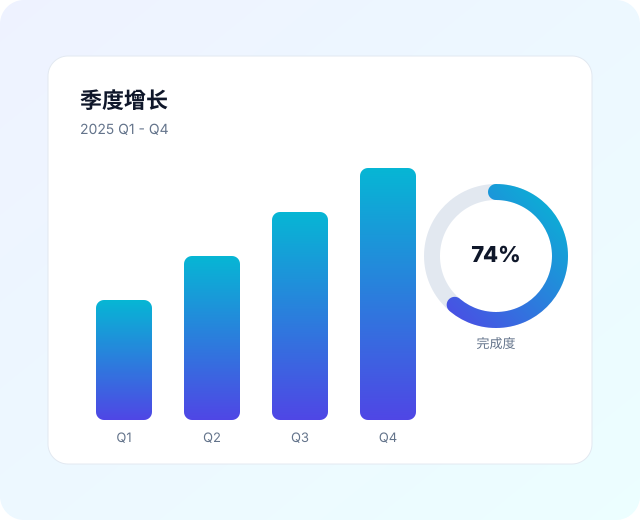

● Ranni · Spike Deck
HTML 到可编辑 PPTX 的工程验证
受限 slide HTML + dom-to-pptx + Playwright 截图回退，验证能否稳定产出有限可编辑的 .pptx。
路线 HTML-to-PPTX Spike
画布 1280 × 720（16:9）
日期 2026-07-07
Contents
本次验证包含的内容
01
封面与定位
P1
02
文本与引用排版
P3
03
双栏图文页
P4
04
数据指标与表格
P5
05
复杂图表截图回退
P6
06
时间线与总结
P7-8
Ranni Spike Deck
02 / 08
Why HTML route
为什么需要 HTML-to-PPTX 路线
native PptxGenJS 路线编辑性强、结构可控，HTML 路线创作快、视觉表达强、预览直接。
- 保留 HTML/CSS 的创作效率与逐页预览体验。
- 主要文本、图片、基础形状、表格保持 PPTX 可编辑。
- 复杂图表与复杂装饰用 data-pptx-raster 做局部截图回退。
- 所有产物与中间文件都落在当前 session workspace。
重要文本优先保留为可编辑文本，复杂视觉优先局部截图，避免整页栅格化。
Ranni Spike Deck
03 / 08
Two column
左文右图：叙事 + 数据插画
左侧承载结论性叙事，右侧放置本地化的 SVG 插画资产，验证图片资源的本地化与裁切。
- 插画资产已下载到 assets/，使用相对路径引用。
- 图片以独立资产放置，不承载整页文字。

Ranni Spike Deck
04 / 08
Metrics & table
关键指标与结构化对比
¥ 1.28M
季度营收
▲ 14.5% 环比
45.2k
活跃用户
▲ 8.1% 环比
3.9%
流失率
▼ 0.6pt 同比
| 渠道 | 占比 | 营收 | 趋势 |
|---|---|---|---|
| 自然搜索 | 42% | ¥ 537k | 上升 |
| 付费投放 | 31% | ¥ 396k | 持平 |
| 口碑 referral | 27% | ¥ 347k | 上升 |
Ranni Spike Deck
05 / 08
Raster fallback
复杂图表：转换前截图回退
下方图表块带有 data-pptx-raster，预处理阶段会被截图保存到 fallback-assets/，并替换为等尺寸 img。
Q1
Q2
Q3
Q4
截图分辨率按 2x device scale factor 生成，保证清晰度。
Ranni Spike Deck
06 / 08
Timeline
产品交付节奏
W1
立项
确定 spike 范围与验收维度。
W2
接入
Playwright 测量与截图回退脚本。
W3
导出
dom-to-pptx 生成有限可编辑 pptx。
W4
复核
qa-report 与多端兼容性核对。
Ranni Spike Deck
07 / 08
Summary
三条结论
可编辑子集成立
标题、正文、列表、表格能保持为 PPTX 文本对象。
截图回退兜底
复杂图表用局部截图保留视觉，避免整页栅格化。
产物可追溯
prepared.html、measurements、qa-report 全部落 workspace。